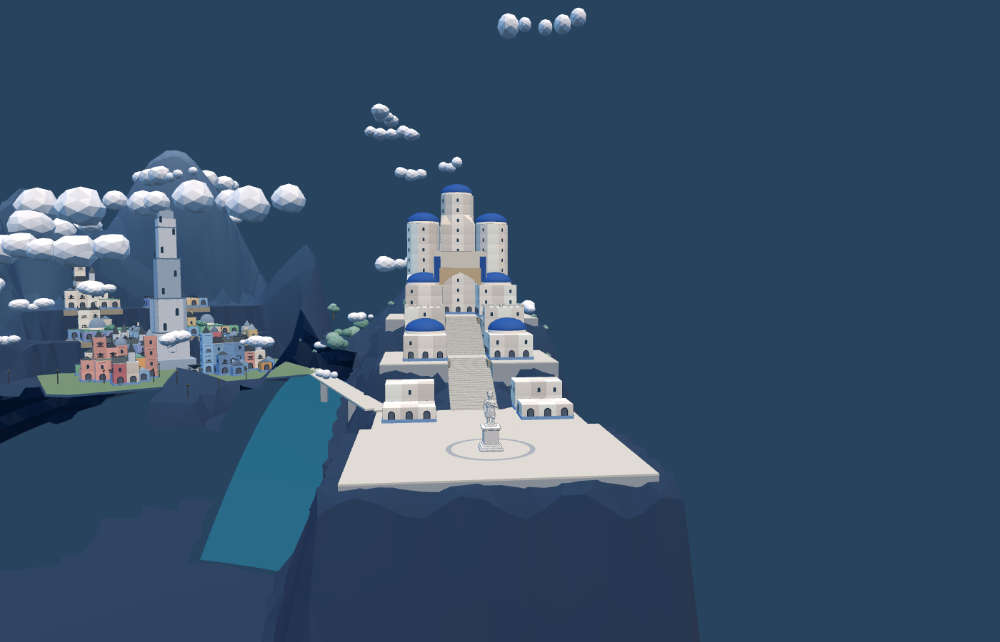

分层前

本轮实际加载几何，同镜头（布局检查光照）

原默认旧城978个建筑格，迁移后329个，减少649个建筑单元（包含整栋冗余房屋及垫高格）。旧城中心进一步左移至−52，新城广场保持x=8。原WFC分三区求解；基面4.95/10.95/16.95。自定义旧存档保留原布局，未删除或强行重排。

仍未美术验收：山腰建筑群的疏密、城市天际线及其与后山关系需要继续对照；新城主堡细节、雕像、木马、港口和布光未完成。新城已接入7个蓝色圆顶（中层2个、主堡层5个）；主堡体块仍需继续迭代，不能视为目标图复刻完成。Godot最新版本已同步：新城358段行军、旧塔246段通路检查通过；不代表完整战争或美术验收。